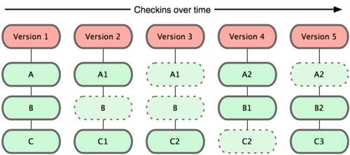

一个分布式版本控制系统
本地版本控制系统解决了版本的管理问题，
再也不用时不时的把工程目录，通过手工拷贝的方式来存档了。
但本地版本控制系统的缺点是，无法解决多人协作的问题。
集中化的VCS不但解决了版本控制问题，还可以多人协作。
但缺点是太依赖于远程服务器，服务器宕机后，会影响所有人的工作。
版本记录只保存在一台服务器上，会有数据丢失风险。
客户端并不只提取最新版本的文件，而是把代码仓库完整地镜像下来。
每一次的提取操作，实际上都是一次对代码仓库的完整备份。
Git和其他版本控制系统的主要差别在于，
Git只关心文件数据的整体是否发生变化，
而大多数其他系统则只关心文件内容的具体差异。
SVN在每个版本中，以单一文件为单位，记录各个文件的差异：
Git在每个版本中，以当时的全部文件为单位，记录一个快照：

在Git内都文件有三种状态：已提交（committed）
已修改（modified） 已暂存（staged）
已提交表示该文件已经被安全地保存在本地数据库中了；
已修改表示修改了某个文件，但还没有提交保存；
已暂存表示把已修改的文件放在下次提交时要保存的清单中。
$ mkdir learngit
$ cd learngit
$ git init
$ git status
$ cat>readme.txt
$ git add .
$ git add filename
$ git commit -m "first commit"
$ git status
$ git remote add origin https://github.com/SteveJeson/Reveal.git
$ git push -u origin master
$ git push origin master
$ git clone https://github.com/SteveJeson/Reveal.git